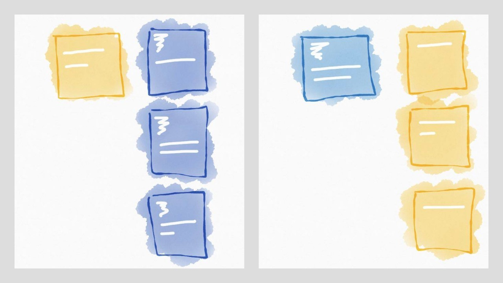

From Elm To Fable
A few months ago I started a quest to gain reliability in frontend development. I chose Elm as my starting point, from this list:
- Plain Javascript
- Facebook Flow
- TypeScript
- PureScript
- Elm
This was a ranking from "not reliable" to "reliable" frontend languages, mainly taking types into consideration. After programming with Elm a bit (and fiding it awesome :) ), I started looking for other languages with similar characteristics. That was when I found F#, and I'm really impressed by it.
It turns out that there is an F# to JS compiler called Fable. In the ranking, it would be between Typescript and Purescript, because it trades a bit of its "safety" for an easier Javascript interop.
In this post I'll "convert" the star wars app I wrote in Elm to Fable, and then I'll refactor it. Along the way, I'll compare the experience to both Elm and regular Javascript workflows.
For this post, I'll presume some familiarity with Elm or other ML languages, mainly that you understand how discriminated unions and pattern matching work. I wrote about these subjects in part one of the Learning Elm series. Scott Wlaschin has one of the best blogs on typed functional programming that I've come across, and has written a great article on F# discriminated unions.
Let's get started!
Starting A New Fable Project
Elm is very "beginner friendly" - it has always been one of its main goals. This makes it very easy to start out playing with the language, be it with Try Elm online or using Elm Reactor locally. Fable works more like a regular Javascript transpiler; so we need to do the initial pumbling, and then run our project through a local server.
Fortunately, it's simple. This is what I did: first, I wrote an index.html file that imports a build/bundle.js script:
<!doctype html>
<html>
<head>
<meta http-equiv='Content-Type' content='text/html; charset=utf-8'>
<title>Star Wars - Fable</title>
</head>
<body>
<div id="app"></div>
<script src="build/bundle.js"></script>
</body>
</html>Then I globally installed the Fable compiler, and locally installed the fable-core and fable-compiler packages in the project:
$ npm install -g fable-compiler
$ npm init
$ npm install --save fable-core fable-compilerBefore writing the first F# file, please install the Ionide extension to VS Code or Atom. It is very powerful, and makes the developing experience very pleasurable. The compiler realtime help is even better than Elm's! I'll talk more about this in the conclusion.
Now we can write a F# file, let's say in src/Main.fsx:
#r "../node_modules/fable-core/Fable.Core.dll"
open Fable.Import.Browser
console.log("It's working!")I'll explain the syntax soon. Now we can build the project by using the fable command with some arguments:
$ fable src/Main.fsx --outDir ./build --rollupI'm saying "build the src/Main.fsx file, and save the output in the ./build directory, and bundle it using the Rollup bundler!".
Now, as a last step, to run the built project, choose your favorite simple local server to serve the index.html. I've been using http-server and haven't had any problems:
$ npm install -g http-server
$ http-serverJust head to http://localhost:8080 and we're running! :)
The .fsx File
The Main.fsx file is a F# script. That's the format we're going to use in this project. Let me explain our initial script:
- Usually in the beginning of the file, the external dependencies are listed. This is how regular F# dll's are imported:
#r "../node_modules/fable-core/Fable.Core.dll"(If we want to import another .fsx file or a regular .fs F# file we will use the #load command)
- Then import the modules that'll be used:
open Fable.Import.BrowserThis module imports the browser API, like window or console.
- Now you can write the application code:
console.log("It's working!")That's everything that's on an fsx file. Now let's implement the Star Wars app using Fable.
The Spec
As a reminder, let me rewrite here the application spec:
The spec is simple: a Star Wars character "card" appears on the left, and corresponding film "cards", representing the films of the character, are shown on the right.
Clicking on a film "card" displays it on the left, and a list of the characters that appear in the film are shown on the right. And so on.

Characters cards will be yellow, and film cards will be blue. By clicking on a card, it changes from one screen to the other.
The Chosen Framework
Fable's github page also houses two frameworks: Fable Elmish and Fable Arch. Even though Elmish sounded like the one I would be more familiar with because of previous Elm experience, I chose Arch because it has better documentation - or at least a clear list of sample apps :)
To use it, just install it as you would any npm library:
$ npm install --save fable-archAn observation: Fable documentation, in general, is still not great. In fact, it's almost nonexistent if we compare to Elm or to a lot of Javascript libraries and frameworks. But the samples provided are really good and helpful, and I found them the best source for learning Fable in the first moments.
Another thing worth mentioning: there's a Gitter channel dedicated to Fable. I asked a couple of questions there, and was promptly answered. The people who actually make Fable and the frameworks are there, and they are really trying to help everyone!
The Character And Film Modules
First let's write the Character and Film modules. They only contain Model and View code. Let's start with the Character model:
#r "../node_modules/fable-core/Fable.Core.dll"
module Character =
type Model =
{ name: string
films: string list }That is straightforward. Only small syntax differences from Elm, like not needing a comma or writing string list instead of List String.
Now the Character view:
#load "../node_modules/fable-arch/Fable.Arch.Html.fs"
open Fable.Arch.Html
(...)
let mainStyle =
Style
[ "background-color", "rgba(230, 126, 34,1.0)"
"width", "200px"
"height", "200px"
"color", "white"
"font-family", "-apple-system, system, sans-serif"
"margin", "20px 0px 0px 20px"
"cursor", "pointer" ]
let nameStyle =
Style
[ "padding", "20px"
"font-size", "18px" ]
let view model =
div
[ mainStyle ; onMouseClick (fun _ -> model) ]
[ div [ nameStyle ] [ text model.name ] ]The model code is very similar to the Elm version, but there's something important to be said here: in F#, all code should be written in compile order. That means that if you use a function or variable in another function, that should be declared earlier in the file. This is different from Elm, and from Javascript (if you declare a function with the function keyword). It seems this is a source of some debate in the F# community, since in regular F# projects you even need to specify the order that the files should be compiled! I have no problem with it. I tend to prefer that the view function comes before the style variables, but I also see that forcing things to be in order can be beneficial to the understanding of the code.
The Film module is then very similar:
module Film =
type Model =
{ title: string
episodeId: int
characters: string list }
let mainStyle =
Style
[ "background-color", "rgba(52, 152, 219,1.0)"
"width", "200px"
"height", "200px"
"color", "white"
"font-family", "-apple-system, system, sans-serif"
"margin", "20px 0px 0px 20px"
"cursor", "pointer" ]
let nameStyle =
Style
[ "padding", "20px"
"font-size", "18px" ]
let numberStyle =
Style
[ "padding", "20px 20px 0px 20px"
"font-size", "60px" ]
let view model =
div
[ mainStyle ; onMouseClick (fun _ -> model) ]
[ div [ numberStyle ] [ text (model.episodeId.ToString()) ]
div [ nameStyle ] [ text model.title ] ]The Application Model And View
Let's now define the application model:
type Model =
| InitialScreen
| LoadingFilms of Character.Model
| LoadingCharacters of Film.Model
| FilmsFromCharacter of Character.Model * Film.Model list
| CharactersFromFilm of Film.Model * Character.Model list
| ErrorScreenThe application model is a discriminated union, and I just adapted the syntax from the original Elm version.
Let's convert the views one by one. First InitialScreen:
let messageStyle =
Style
[ "margin", "20px 0px 0px 20px"
"width", "200px"
"height", "200px"
"font-family", "-apple-system, system, sans-serif"
"color", "rgba(149, 165, 166,1.0)"
"font-size", "18px" ]
let messageView t =
div [ messageStyle ] [ text t ]
let view model =
match model with
| InitialScreen ->
messageView "Loading amazing characters and films..."
| _ ->
div [] []To render the view, we need to call the run createApp. That's a little different from Elm's Program:
#load "../node_modules/fable-arch/Fable.Arch.App.fs"
#load "../node_modules/fable-arch/Fable.Arch.Virtualdom.fs"
(...)
open Fable.Arch
open Fable.Arch.App.AppApi
(...)
let update model msg = model , []
let initialModel = InitialScreen
createApp initialModel view update Virtualdom.createRender
|> withStartNodeSelector "#app"
|> startcreateApp is direct: it needs an initial model, a view function, an update function, and a renderer. The renderer is the engine which will render your application view to the browser dom. Currently we can only use virtual-dom, which is a very fast and mature library, but it seems that a React renderer is also in the works.
We need to install virtual-dom in our project:
$ npm install --save virtual-domEverything is looking good, right? But try compiling it. It doesn't, and outputs the following error:
▶ fable src/Main.fsx --outDir build --rollup
fable-compiler 0.7.17: Start compilation...
Compiled fable-arch/Fable.Arch.Html.js at 11:35:51 PM
Compiled fable-arch/Fable.Arch.App.js at 11:35:51 PM
Compiled fable-arch/Fable.Arch.Virtualdom.js at 11:35:51 PM
Compiled src/Main.js at 11:35:51 PM
Bundling...
[BUNDLE ERROR] 'h' is not exported by node_modules/virtual-dom/index.js (imported by build/fable-arch/Fable.Arch.Virtualdom.js). For help fixing this error see https://github.com/rollup/rollup/wiki/Troubleshooting#name-is-not-exported-by-module
(...)We're using Rollup to bundle the files. It turns out that Rollup works well with ES6 modules, but may break when using regular CommonJS modules. Since some libraries are written using CommonJS, we need to deal with these cases properly.
We need to configure Rollup to see the virtual-dom module and it's exported functions, so let me introduce you to the fableconfig.json file.
Instead of calling fable src/Main.fsx --outDir ./build --rollup every time, we can put the compiling configuration inside fableconfig.json. For example, if we have this config:
{
"outDir": "build",
"projFile": "./src/Main.fsx",
"sourceMaps": true
}We can just run fable or fable --watch in the terminal and get the same output plus a sourcemap.
Now we can add the Rollup CommonJS configuration:
{
"outDir": "build",
"projFile": "./src/Main.fsx",
"sourceMaps": true,
"rollup": {
"plugins": [
["commonjs", {
"namedExports": {
"virtual-dom": [ "h", "create", "diff", "patch" ]
}
}]
]
}
}This step is a small complication in our build system. It's definitely more complex than anything related to an Elm project build, but, on the other hand, it's the effect of using a very good and used Javascript tool. Efficient bundles are a central and important issue in frontend projects, and since we cannot escape it, I actually like that we are using a good tool for that.
Messages And The Rest Of The Views
Before building the other views, let's define the application Messages. As a reminder: a message is a description of a user action or an event that happens in the application. It is a model of the state transitions. Converting the original messages we have:
type Msg =
| LoadCharacters of Film.Model
| ToCharactersFromFilm of Film.Model * Character.Model list
| LoadFilms of Character.Model
| ToFilmsFromCharacter of Character.Model * Film.Model list
| FetchFailNow let's write one more case for the main view function:
let view model =
match model with
| InitialScreen ->
messageView "Loading amazing characters and films..."
| LoadingFilms ch ->
div [ Style [ "display", "flex" ] ]
[ Character.view ch
messageView ("Loading " + ch.name + " films...") ]LoadingFilms shows one character and is waiting for the related films to load. If you hover on the view function declaration - or if you are using Ionide, it's already showing - you'll see that the function type signature is:
Model -> DomNode<Character.Model>That means that view is a function that receives a Model and sends messages of type Character.Model. This occurs because of the attribute onMouseClick (fun _ -> model) we wrote in the Character.view that we are calling in this function.
The thing is, we want to send messages of the type Msg we just defined. An error occurs if we add the FilmsFromCharacter case, that calls Film.view:
(...)
| FilmsFromCharacter (ch, fs) ->
let filmsView = List.map Film.view fs
div [ Style [ "display", "flex" ] ]
[ Character.view ch
div [] filmsView ]$ fable
[ERROR] F# project contains errors:
Type mismatch. Expecting a
'DomNode<Character.Model> list'
but given a
'DomNode<Film.Model> list'
The type 'Character.Model' does not match the type 'Film.Model'So, Film.view sends messages of type Film.Model. These are not compatible with Character.Model, which was the message being sent by the function before we wrote the case. This is a great example of the power of F#'s type inference; I don't know if you noticed, but we haven't written any type signature so far :) It's rarely needed in F#, and I still feel the same type power and safety that I felt in Elm.
To make sure that our main view only produces messages of type Msg, we need to map both the Character's and Film's view functions to produce it:
let mappedCharacterView model =
let characterView = Character.view model
Html.map LoadFilms characterView
let mappedFilmView model =
let filmView = Film.view model
Html.map LoadCharacters filmViewNow, just for fun, let's refactor mappedCharacterView. First of all, we can identify a pipeline there: we transform our model with the view function and then we map it to LoadFilms message. That translates directly to code:
let mappedCharacterView model =
model
|> Character.view
|> Html.map LoadFilmsWhich is already simple and clear. There's another F# operator, the >>. It composes two functions into another one, in the same order as |>. The next rewrite has the same behavior:
let mappedCharacterView model =
let transform = Character.view >> Html.map LoadFilms
transform modelWhen I see a function like that, I immediately think that model and transform are temporary variables that do not add a lot to readability. So I think this is a nice case where a point free function is simple:
let mappedCharacterView =
Character.view >> Html.map LoadFilms
let mappedFilmView =
Film.view >> Html.map LoadCharactersAnd now we can convert all the views of the application:
let view model =
match model with
| InitialScreen ->
messageView "Loading amazing characters and films..."
| LoadingFilms ch ->
div [ Style [ "display", "flex" ] ]
[ mappedCharacterView ch
messageView ("Loading " + ch.name + " films...") ]
| FilmsFromCharacter (ch, fs) ->
let filmsView = List.map mappedFilmView fs
div [ Style [ "display", "flex" ] ]
[ mappedCharacterView ch
div [] filmsView ]
| LoadingCharacters f ->
div [ Style [ "display", "flex" ] ]
[ mappedFilmView f
messageView ("Loading " + f.title + " characters...") ]
| CharactersFromFilm (f, chs) ->
let chsView = List.map mappedCharacterView chs
div [ Style [ "display", "flex" ] ]
[ mappedFilmView f
div [] chsView ]
| ErrorScreen ->
messageView "An error ocurred. Please refresh the page and try again - and may the Force be with you!"The syntax is very clean. I like not having to use commas when changing lines, and don't mind the occasional parenthesis. I love Elm Format and how it formats your code automatically - F# doesn't have this, but I don't feel I lose a lot of time with code formatting to get a good look and feel.
Now we can try the views with "mock" application states, for instance:
let char:Character.Model =
{ name = "Luke Skywalker" ; films = [] }
let film:Film.Model =
{ title = "A New Hope" ; episodeId = 4 ; characters = [] }
let initialModel =
FilmsFromCharacter ( char , [ film ; film ; film ] )Run fable && http-server and reload the browser, and you'll see it!
The Update Function And Async Work
Fable Arch resembles Elm in the sense that the update function returns a new model and a list of "actions". Actions are functions that receive a handler callback parameter; handler is a function that receives a Msg and feeds it back to the update function.
Let's start with the initial work of the application: getting a character from the API, and transitioning from Initial Screen to LoadingFilms of Character.Model.
We'll get the entities from the Star Wars API, so we need to use the browser fetch function. There's a library called fable-powerpack that makes it easier to use both fetch and promises with fable:
$ npm install --save fable-powerpackAnd then we can use the following in our project:
#r "../node_modules/fable-powerpack/Fable.PowerPack.dll"
(...)
open Fable.PowerPack
open Fable.PowerPack.Fetch
(...)
let fetchEntity url =
promise {
let! fetched = fetch url []
let! response = fetched.text()
return response }promise { ... } is a F# computation expression. There's nothing like it in Elm - it's kind of an ES6 generator, or ES7 async/await. Inside the promise block, code is written sequentially, but runs asynchronously. If you define a promise variable using let!, it will wait for the promise to resolve without blocking the thread, and then continue running the code. The code above could be loosely translated to Javascript as:
// using promises:
const fetchEntity = url => fetch(url, {}).then(r => r.text())
// using async/await:
const fetchEntity = url => {
const fetched = await fetch(url, {})
const response = await fetched.text()
return response
}The only difference is that promises run as soon as they are defined, and computation expressions run only when they are actually used. I find this to be better behaviour, and more compatible with the more "famous" F#'s async { ... }.
The inferred type is string -> Promise<string>, but we want the function to return either a Character or a Film model. So we need string -> Character.Model and string -> Film.Model parse functions. So, inside the Film module:
open Fable.Core.JsInterop
(...)
module Film =
type Model =
{ title: string
episodeId: int
characters: string list }
type ModelJSON =
{ title: string
episode_id: int
characters: string list }
let parse str =
let obj = ofJson<ModelJSON> str
{ title = obj.title
episodeId = obj.episode_id
characters = obj.characters }
(...)I created a record type for the json, so I could use the function ofJson<'a> to convert a string by finding the json keys that are equivalent to 'a keys. Then it builds a regular Film.Model with the result.
This function has the signature string -> Film.Model, but if there's any error in the process, it raises an exception. I'm not an exception fan (it's not explicit in the type signature!), but it'll work here because we'll put it inside a promise computation expression, and it will behave just like it would in Javascript: it will reject, and we'll treat it in a Promise.catch expression.
The Character module ended up being much simpler:
module Character =
(...)
let parse = ofJson<Model>Since Model already mirrors the json schema of the API :)
We can now change our fetchEntity function to receive a parser:
let fetchEntity url parser =
promise {
let! fetched = fetch url []
let! response = fetched.text()
return response |> parser }And we can write the getFirstCharacter function that fetches the first character of the application:
let getFirstCharacter handler =
fetchEntity "http://swapi.co/api/people/1/" Character.parse
|> Promise.map LoadFilms
|> Promise.catch ( fun _ -> FetchFail )
|> Promise.map handler
|> ignoreIt receives handler as a parameter, which is a function that will receive a Msg and feed it back to the appication. ignore is just a function that returns unit, which is F#'s "void".
The handler is receiving both LoadFilms and FetchFail messages, so let's implement an initial update function that changes the application state properly, and also call getCharacter in createApp:
let update model msg =
match msg with
| LoadFilms ch -> LoadingFilms ch , []
| FetchFail -> ErrorScreen , []
| _ -> model , []
(...)
createApp InitialScreen view update Virtualdom.createRender
|> withStartNodeSelector "#app"
|> withInitMessage getFirstCharacter
|> startIf we run the application, we'll be able to see the initial screen transitioning to the next screen with real info from the API!
Now the last two functions: getCharacters and getFilms, that get all the related entities of a character or a film:
let getCharacters (film: Film.Model) handler =
film.characters
|> List.map ( fun url -> fetchEntity url Character.parse )
|> Promise.Parallel
|> Promise.map ( fun chs -> ToCharactersFromFilm (film, List.ofArray chs) )
|> Promise.catch ( fun _ -> FetchFail )
|> Promise.map handler
|> ignoreThis function fetchs all the entities in parallel, waits for all the promises to resolve, builds a ToCharactersFromFilm message and calls handler.
getFilms is almost mirrored:
let getFilms (character: Character.Model) handler =
character.films
|> List.map ( fun url -> fetchEntity url Film.parse )
|> Promise.Parallel
|> Promise.map ( fun fs -> ToFilmsFromCharacter (character, List.ofArray fs) )
|> Promise.catch ( fun _ -> FetchFail )
|> Promise.map handler
|> ignoreNow we'll finish our update (notice the side-effects listed!):
let update model msg =
match msg with
| LoadCharacters f ->
LoadingCharacters f , [ getCharacters f ]
| ToCharactersFromFilm ( f , chs ) ->
CharactersFromFilm ( f , chs ), []
| LoadFilms ch ->
LoadingFilms ch , [ getFilms ch ]
| ToFilmsFromCharacter ( ch , fs ) ->
FilmsFromCharacter ( ch , fs ), []
| FetchFail ->
ErrorScreen , []And that's it - the application is up and running without any errors. That's the sensation you have only with a good compiled language: code running and working at the same time, from the very beginning.
The complete application can be found here.
Bonus: Refactoring!
There's one thing that I really don't like in this solution: the amount of "almost duplicate" code related to Characters and Films. I feel I'm writing everything twice. I think it came from thinking that Character and Film should be separate modules, and I could not figure out at the time a way to have "generic" modules or something of the sort. So I'll try now to make it better, and find a better abstraction for Character and Film that does not result in "almost duplicate" code.
I'll start by defining the models of the entities:
type Url = string
type Details =
| Character of name: string
| Film of title: string * episode: string
type Entity =
{ related : Url list
details : Details }An entity has a generic list of related entities, and a Details property that holds the actual characteristics of a film or a character. Now that we have a generic entity type, we can simplify the application model:
type Model =
| InitialScreen
| Loading of Entity
| List of Entity * Entity list
| ErrorScreenAnd we can parse the json using the function:
type CharacterResponseJson =
{ name : string
films : string list }
type FilmResponseJson =
{ title : string
episode_id : int
characters : string list }
let [<PassGenericsAttribute>] betterOfJson<'a> text =
try
let json = ofJson<'a> text
Some json
with _ ->
None
let parse text =
let chRecord = betterOfJson<CharacterResponseJson> text
let filmRecord = betterOfJson<FilmResponseJson> text
match chRecord , filmRecord with
| Some ch , _ ->
{ related = ch.films
details = Character ch.name }
| _ , Some film ->
{ related = film.characters
details = Film ( film.title , film.episode_id.ToString() ) }
| _ ->
failwith "could not parse entity"Let's pause a little to understand this function. First, I created the record types to reflect the information I'm looking for in the API's json schema. Then, I created a function called betterOfJson which is just ofJson returning an option. We have to use the [<PassGenericsAttribute>] so this function works properly when transpiled to Javascript. No need to worry about how it works - the compiler tells you where you need to use it! :)
After that, the parse function is defined. It raises an exception if there's an error; which, again, I really do not like since it works as a "hidden output", but we're going to use it inside a Promise, so it's not that bad.
In trying to make this function better, I learned another really amazing F# feature: Partial Active Patterns. I wanted to to have this function written somewhat like this:
let parse text =
match text with
| IsCharacter ch -> ...
| IsFilm film -> ...
| _ -> failwith "could not parse entity"It turns out that there's a simple way to achieve that:
let (|IsCharacter|_|) text =
betterOfJson<CharacterResponseJson> text
let (|IsFilm|_|) text =
betterOfJson<FilmResponseJson> textTo build a Partial Active Pattern, you have to write a function that returns an option, and has this (|PatternMatchCase|_|) definition. Now you can use both IsCharacter and IsFilm in a pattern match:
let parse text =
match text with
| IsCharacter ch ->
{ related = ch.films
details = Character ch.name }
| IsFilm film ->
{ related = film.characters
details = Film ( film.title , film.episode_id.ToString() ) }
| _ ->
failwith "could not parse entity"This is much simpler. This is another feature of F# that makes it stand out.
I'm still not 100% happy with an "exception-throwing" function. If someone knows of a better way to deal with JSON parsing, please let me know in the comment section!
Next, let's deal with the update part of the application. The messages can be simplified too:
type Msg
= Load of Entity
| ToList of Entity * Entity list
| FetchFailgetFirstCharacter is very similar:
let fetchEntity (url:Url) =
promise {
let! fetched = fetch url []
let! response = fetched.text()
return parse response }
let getFirstCharacter handler =
fetchEntity "http://swapi.co/api/people/2/"
|> Promise.map Load
|> Promise.catch ( fun _ -> FetchFail )
|> Promise.map handler
|> ignoreAnd now we only need one getRelatedEntities instead of getCharacters and getFilms:
let getRelatedEntities (entity:Entity) handler =
List.map fetchEntity entity.related
|> Promise.Parallel
|> Promise.map ( fun list -> ToList ( entity , List.ofArray list ) )
|> Promise.catch ( fun _ -> FetchFail )
|> Promise.map handler
|> ignoreAnd our update function became simpler:
let update model msg =
match msg with
| Load entity -> Loading entity , [ getRelatedEntities entity ]
| ToList ( entity , list ) -> List ( entity , list ) , []
| FetchFail -> ErrorScreen , []From this point on, we only need to implement the view functions. This is the final view function (messageView and entityView were ommited for brevity, but can be found here):
let view model =
match model with
| InitialScreen ->
messageView "Loading amazing characters and films..."
| Loading entity ->
div [ Style [ "display", "flex" ] ]
[ mappedEntityView entity ; loadingMessageView entity ]
| List ( entity , list ) ->
let listView = List.map mappedEntityView list
div [ Style [ "display", "flex" ] ]
[ mappedEntityView entity ; div [] listView ]
| ErrorScreen ->
messageView "An error ocurred. Please refresh the page and try again - and may the Force be with you!"Much better, right? It's always a pleasure to refactor code using an ML language :)
Conclusions
That's it - we have a completely refactored working version of the Star Wars app. The complete code is here, and the working app is here.
I've compared Elm and F# before, and this experiment compares both in the same domain: frontend web programming. Here are some of my thoughts on the outcome:
- Elm is much friendlier for beginners. It has one way to do almost everything, so there's not many decisions to make when implementing something - it has more of a "puzzle" feel to it. Also, tools like Try Elm and Elm Reactor make it very simple and fast to begin coding and experimenting with the language.
- On the other hand, Fable does not hide from you the fact that it's going to compile to Javascript, and because of that, you have a lot of freedom. For instance, I could immediately make the requests parallel, because promises work just like they do in JS. There was no default way to do this when I implemented the same app in Elm.
- F#'s computation expressions and partial active patterns are really powerful, and make the code more readable and elegant. Actually, it also makes it simpler. There's nothing like it in Elm.
- F#, when used with the Ionide VS Code plugin, is probably the best coding experience I've had to date. Elm comes close (and
elm-formatis great), but hovering in any variable to understand what it is in realtime is an amazing experience. And the type code lenses are really useful too.
Next Steps
I enjoyed the Fable experimentation. I'll continue to look at it, and probably try something with more JS interop to understand better how it would behave in a more real world scenario.
Elm still seems the sensible solution if you have a team of people that are learning functional programming. Elm has a lighter cognitive load, since there's almost only one way of doing it, and the defaults are very good, making it a great learning tool as well.
Teams looking for more freedom and power, on the other hand, can find it with Fable, while still maintaining most of the reliability and safety from an ML language.